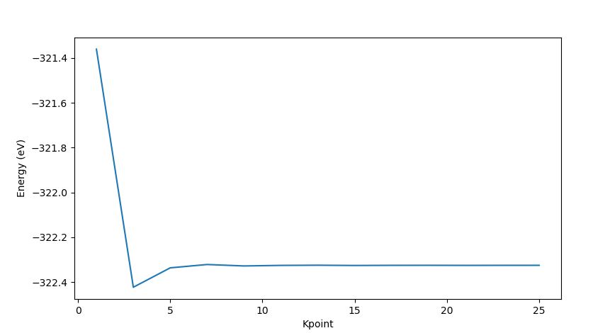

k-point sampling
K-point sampling
이번장에서는 NanoCore를 이용해 그래핀 모델을 생성하고, k-point sampling 과정을 통해 전체 에너지가 수렴하는 k-point를 구할 것이다.
from NanoCore import *
import numpy as np
# Modeling
atoms = carbonlab.grp(0,0)
# Number of system's atoms
num_atoms = len(atoms._atoms)
# Test for supercell
kpoint_sample = [1, 3, 5, 7, 9, 11, 13, 15, 17, 19, 21, 23, 25]
Energy = [] # given energy
for i in kpoint_sample:
sim = s2.Siesta(atoms)
sim.set_option('CGsteps', 0)
sim.set_option('kgrid', [i, i, 1])
sim.set_option('kshift', [0.5,0.5,0.0]) # set k shift from gamma
sim.set_option('MixingWt', 0.10) # adjust mixing weight (density)
sim.set_option('BasisSize', 'SZ') # adjust basis size
sim.run(mpi=1, nproc=8)
energy = s2.get_total_energy()
Energy.append(energy)
'atom'는 'carbonlab 모듈에 종속된 'Atom'의 클래스 이며, 이를 통해 'grephene'을 생성한다. 이후 확인할 k-point 를 설정하고 설정한 k-point안에서 계산을 진행한다. 계산을 진행하며 각 계산에서 얻어진 에너지를 'Energy'에 저장하였다.
f = open('Ediff.txt', 'w')
for i in range(len(Energy)+1):
if i == 0:
f.write('k-points : %02d %02d %02d, Energy = %9.5f, Ediff= %s' % (2*i+1, 2*i+1, 1, Energy[i], 'Not_intial_difference'))
f.write('\n')
elif i < len(Energy):
f.write('k-points : %02d %02d %02d, Energy = %9.5f, Ediff=%9.5f' % (2*i+1, 2*i+1, 1, Energy[i], Energy[i]-Energy[i-1]))
f.write('\n')
elif i == len(Energy):
f.write('over')
f.write('\n')
else:
pass
f.close()
'Ediff.txt'라는 파일을 만들어 저장된 에너지를 저장하였다. 이는 이후 수렴되는 에너지를 찾을 때 사용 될 것이다. Ediff파일은 아래와같다.
k-points : 01 01 01, Energy = -321.36050, Ediff= Not_intial_difference
k-points : 03 03 01, Energy = -322.42307, Ediff= -1.06257
k-points : 05 05 01, Energy = -322.33655, Ediff= 0.08653
k-points : 07 07 01, Energy = -322.32165, Ediff= 0.01490
k-points : 09 09 01, Energy = -322.32810, Ediff= -0.00645
k-points : 11 11 01, Energy = -322.32556, Ediff= 0.00253
k-points : 13 13 01, Energy = -322.32485, Ediff= 0.00072
k-points : 15 15 01, Energy = -322.32595, Ediff= -0.00110
k-points : 17 17 01, Energy = -322.32532, Ediff= 0.00063
k-points : 19 19 01, Energy = -322.32518, Ediff= 0.00014
k-points : 21 21 01, Energy = -322.32555, Ediff= -0.00036
k-points : 23 23 01, Energy = -322.32530, Ediff= 0.00024
k-points : 25 25 01, Energy = -322.32526, Ediff= 0.00005
over
import os, sys
def file_len(filename):
with open(filename) as f:
for i, l in enumerate(f):
pass
return i+1
tlines = file_len('RUN.fdf')
struct_info1 = []
struct_info2 = []
f = open('RUN.fdf', 'r')
for i in range(tlines):
line = f.readline()
words = line.split()
struct_info1.append(line)
struct_info2.append(words)
f.close()
# Get line DM.Tolerence
for i in range(len(struct_info1)):
if len(struct_info2[i]) >= 2:
if (struct_info2[i][0]) =='DM.Tolerance':
startnum = i
else:
pass
tolerance = []
tolerance = struct_info2[startnum][1]
Tol = int(tolerance[4])
tole=1.00000
for i in range(Tol):
tole=tole*0.1
수렴되는 에너지의 기준을 설정하기 위해 RUN.fdf 파일을 읽어서 Tolerance를 읽어 기준을 받아왔다.
# Checking Energy difference and find proper k-point
tline2 = file_len('Ediff.txt')
struct_info3 = []
struct_info4 = []
f = open('Ediff.txt', 'r')
for i in range(tline2):
line = f.readline()
words = line.split()
struct_info3.append(line)
struct_info4.append(words)
f.close()
#---------------------------------------------------------
for i in range(len(struct_info3)):
if str(struct_info3[i].strip()) == 'over':
blacknum = i+1
else:
pass
for j in range(1, blacknum-1):
if abs(float(struct_info4[j][9])) <= tole:
print('kpoint= %s' % struct_info4[j][2])
kpoint=2*j+1
else:
print('kpoint is not converage')
print('Converge kpoint = %d' % kpoint)
이제 에너지가 저장된 'Ediff.txt' 파일을 열어 에너지의 차이가 Tolerance보다 작은 k-point를 찾는다. 수렴되는 k-point는 리눅스 화면에서 확인 할 수 있다.
결과정리
plt.plot(kpoint_sample, Energy)
plt.xlabel("Kpoint")
plt.ylabel("Energy (eV)")
plt.savefig('k-test.png', dpi=300, bbox_inches ="tight")
plt.show()
계산된 k-point 별 에너지는 다음과 같다. 또한 이를 확인하면 수렴되는 에너지의 k-point가 적절히 구해졌는지 확인할 수 있다. 또한 수렴된 k-point는 리눅스 화면을 통해서 확인할 수 있다.

kpoint is not converage
kpoint is not converage
kpoint is not converage
kpoint is not converage
kpoint is not converage
kpoint is not converage
kpoint is not converage
kpoint is not converage
kpoint is not converage
kpoint is not converage
kpoint is not converage
kpoint= 25
Converge kpoint = 25